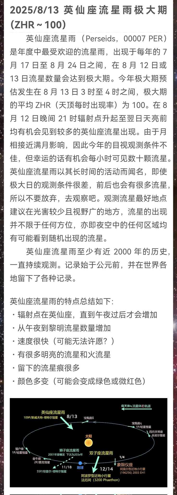

呜呀，又是一年英仙座流星雨了哇😘
流星雨辐射点在北偏东方向，下图是咱前几天在飞机上拍的英仙座与鹿豹座附近…辐射点就在机翼翼梢略微延长的位置哦哦
大家愿意熬夜的话可以在凌晨躺着望向西北或东方的天空碰碰运气抓小流星喵🥰今年还恰逢新月没有月光影响呢
可惜咱大概又是没机会看了，南京的天气不太好呢🥹会试试在今晚的飞机上盯一盯喵

流星雨辐射点在北偏东方向，下图是咱前几天在飞机上拍的英仙座与鹿豹座附近…辐射点就在机翼翼梢略微延长的位置哦哦
大家愿意熬夜的话可以在凌晨躺着望向西北或东方的天空碰碰运气抓小流星喵🥰今年还恰逢新月没有月光影响呢
可惜咱大概又是没机会看了，南京的天气不太好呢🥹会试试在今晚的飞机上盯一盯喵

有人愿意熬夜喵～如果你那里天气晴朗❛˓◞˂̵✧
为了流星雨～英仙座流星雨的峰值就在今晚喵( •͈ᴗ⁃͈)
没见过流星的话今晚是绝赞的机会～可以在开阔的地方找张躺椅或者铺垫子躺地上
只要耐心盯住夜空，捉到悄然溜过的小流星们挺容易哒～
时间越晚越值得看～凌晨时城市中心预期每小时见6~7颗流星
(1/2) https://t.co/zF9wzMZm3v
为了流星雨～英仙座流星雨的峰值就在今晚喵( •͈ᴗ⁃͈)
没见过流星的话今晚是绝赞的机会～可以在开阔的地方找张躺椅或者铺垫子躺地上
只要耐心盯住夜空，捉到悄然溜过的小流星们挺容易哒～
时间越晚越值得看～凌晨时城市中心预期每小时见6~7颗流星
(1/2) https://t.co/zF9wzMZm3v